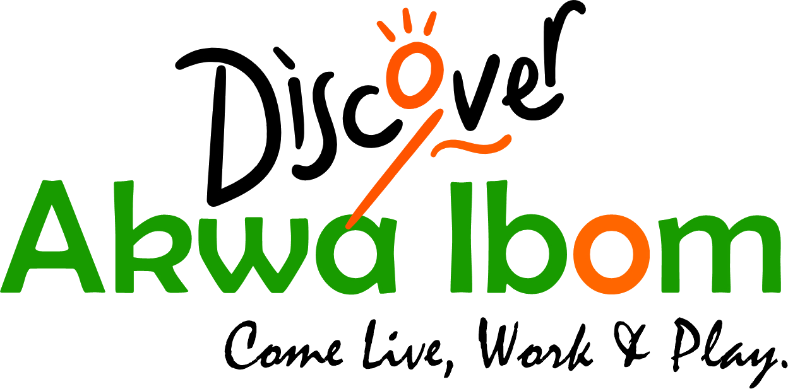
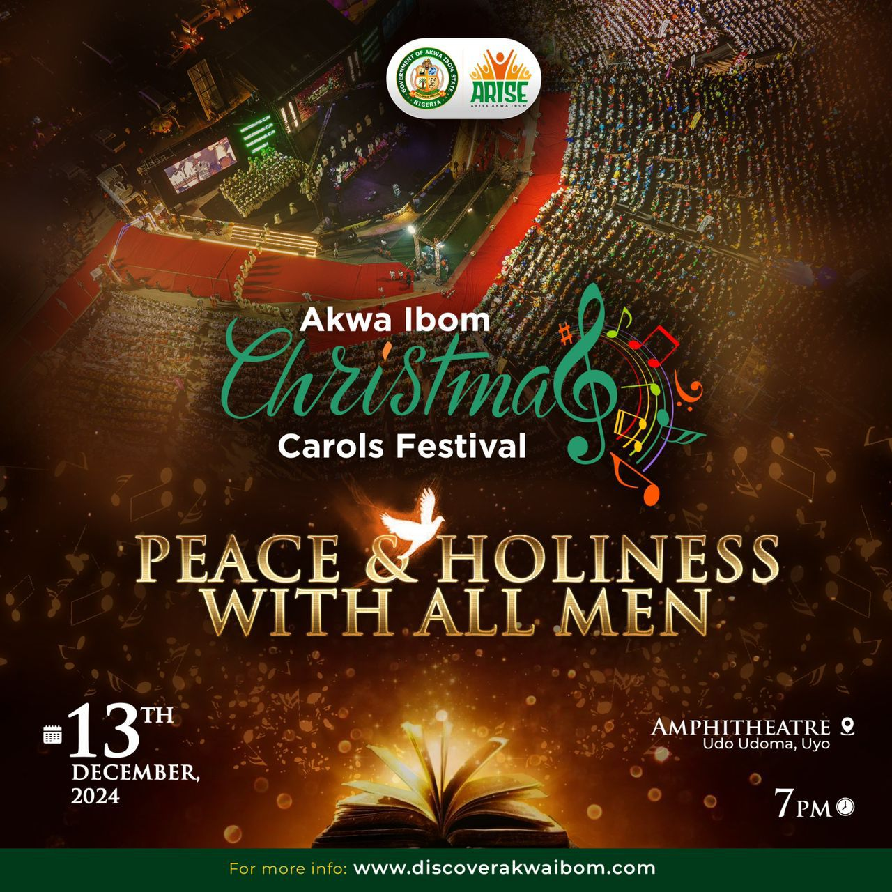
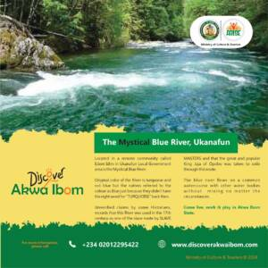
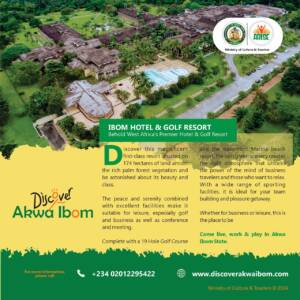

December 13,2024
FREE

December 13 2024
Free
https://discoverakwaibom.com/events/ibom-christmas-carol
Akwa Ibom State Government
+234 700 000 001
info@akwaibomstate.gov.ng
←Uyo Township Stadium →
Uyo, Akwa Ibom state 520102 Nigeria
←Sights and Sounds of Ikono Local Government Area
Sights and Sounds of Ikot Ekpene Local Government Area→
Welcome to Akwa Ibom State, where nature's splendor meets rich cultural heritage and vibrant communities.
mailto:info@discoverakwaibom.com
tel:23402012295422

November 9, 2024 The Mystical Blue River in Ukanafun

November 8, 2024 Behold West Africa's Premier Hotel & Golf Resort